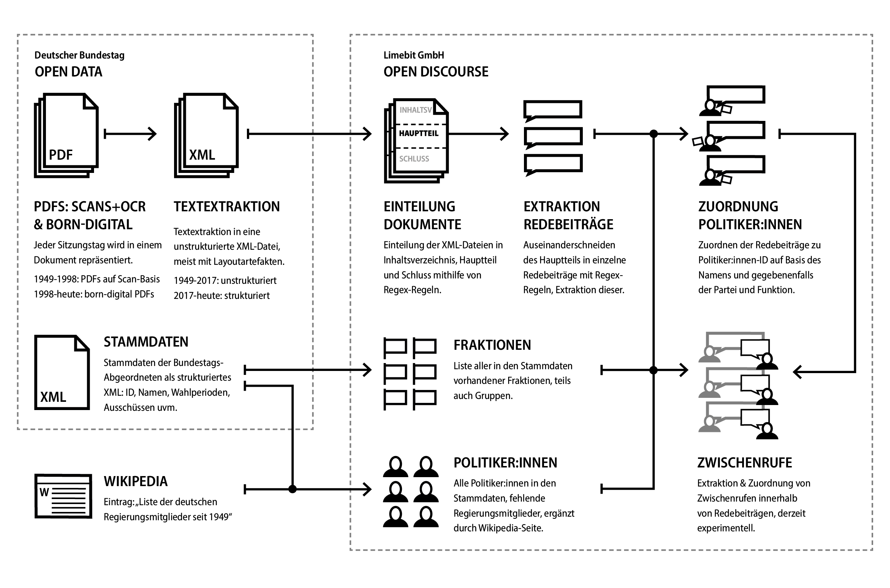

2.2 Open Discourse
Contents
2.2 Open Discourse#
Open Discourse ist ein Forschungsprojekt des Berliner Data-Science-Unternehmens Limebit GmbH und hat das Ziel, die größte Limitierung der vorhandenen Bundestagsdebatten zu beheben: die Unmöglichkeit, Redebeiträge nach Politiker:in, Fraktion oder Position zu filtern. Zu diesem Zweck stellt das Projekt mehrere Bausteine bereit:
Datenbanktabellen mit Redebeiträgen, Zwischenrufen, Politiker:innen und Fraktionen[1]
Online-Recherche-Tool mit Volltextsuche sowie Zeit-, Personen-, Fraktion- und Positions-Filtern[2]
Source-Code der Datenextraktion und Webseite[3]
Diskursanalyse-Tool auf Basis von Latent Dirichlet Allocation (LDA) Topic Modelling[4]
Eine Dokumentation zur Einführung in die Arbeit mit den Daten[5]
In dieser Arbeit werden die Datenbanktabellen hinsichtlich der Redebeiträge und Politiker:innen untersucht und dabei in Bezug auf den Code und die Dokumentation gesetzt. Das Online-Recherche-Tool und das Diskursanalyse-Tool werden nicht betrachtet, auch wenn Letzteres eine besonders kritische Auseinandersetzung erfordert.[6]
Der im Dezember 2020 veröffentliche Datensatz erscheint als eine sehr wertvolle Ressource für historische, politische und linguistische Forschung zur Bundesrepublik Deutschland. Der vergleichbare Datensatz GermalParl, der im Rahmen des Polmine-Projekts 2017 veröffentlicht wurde, reichte 2020 im TEI-Format nur bis 1996 zurück, seit Mai 2023 ist er vollständig seit 1949.[7] Open Discourse hat also den Untersuchungszeitraum um 47 Jahre vergrößert.
Bei der Erstellung werden bis zur 18. Periode komplexe Reguläre Ausdrücke (RegEx) verwendet, eine Sequenz von Zeichen, die bestimmte Suchmuster definiert, um die Protokolle in ihre Struktur (Inhaltsverzeichnis, Hauptteil, Anhang) aufzuteilen. Weiterhin werden sie benutzt, um die Texte in einzelne Redebeiträge zu segmentieren sowie Meta-Informationen zu den Sprecher:innen zu extrahieren. RegEx ist ein wirkungsvolles Werkzeug zur Textverarbeitung und Mustererkennung, das eine präzise und effiziente Datenmanipulation ermöglicht. Ab der 19. Periode basiert dies auf den XML-Tags der seitdem bereitgestellten strukturierten Daten.[8]
 Abbildung 1: Schematische Darstellung der Erstellung der Redebeitrags-, Fraktions-, Politiker:innen- und Zwischenrufs-Tabellen für das Open-Discourse-Korpus bis Periode 18; eigene Grafik.
Der Code wurde unter MIT-Lizenz zur kostenlosen Weiternutzung und die Daten unter der CC0-1.0-Lizenz, also ohne jegliche Einschränkungen, veröffentlicht.[9] Der Code für die Erstellung der Daten ist zwar öffentlich, die Dokumentation aber nur deskriptiv hinsichtlich der Nutzung und enthält keine tiefgreifenden Informationen zum Entstehungsprozesses, den dabei getroffenen Entscheidungen oder einer Evaluation der Datenqualität.[10]
Anfang 2023 wurde ein Preprint eines Papers veröffentlicht, darin wird auf mögliche Probleme für die zugrunde liegenden RegEx-Muster durch Tipp- und OCR-Fehler sowie Konventionsänderungen hingewiesen, Fehlerquoten werden jedoch nicht genannt.[11] Explizit sind darin auch keine Zahlenangaben hinsichtlich der Vollständigkeit angegeben, auf der Webseite heißt es, dass das Open Discourse Korpus 99,7 % aller Protokolle abdecke. Worauf sich die Gesamtsumme bezieht und welche 0,3 % der Protokolle hierbei fehlen wird leider nicht klar, dabei hilft wiederum das Paper, in der darin enthaltenen Grafik 1 lassen sich die Fehlstellen auf Periode 1 und 2 eingrenzen.[12] In einem Twitter-Thread von März 2020 wird erklärt: „Wir geben uns größte Mühe die Plenarprotokolle so sauber wie möglich aufzubereiten – dennoch gibt es nach wie vor Besonderheiten und Fehler in unseren Daten. Wir werden hierzu in den kommenden Wochen eine detaillierte Dokumentation [veröffentlichen]“[13], die wichtigsten Punkte wurden dort auch genannt. So könne es im Prozess der Zuordnung von Redebeiträgen zu Personen zu Nichtzuordnungen kommen. Die Gründe hierfür seien Tippfehler, uneindeutigen Namen oder weil die Personen Gastredner seien und dadurch nicht in den Listen von Mitgliedern des Bundestags (MdBs) und der Regierung vorkommen würden. Dies beträfe jedoch unter 1 % aller Redebeiträge.[14] Hierzu ist anzumerken, dass Gastredner als Begriff unscharf ist, wie im vorherigen Kapitel dargelegt, gibt es im eigentlichen Sinn keine Gäste, sondern nur unterschiedliche Gruppen, die im Bundestag sprechen dürfen, echte Gäste dürfen im Bundestag eigentlich nicht sprechen. Hinsichtlich der Zwischenrufe wird erklärt: „Die Protokollierung von Zwischenrufen ist verhältnismäßig unstrukturiert, da mehrere Zwischenrufe gleichzeitig auftreten können (bspw. Heiterkeit und Applaus) und mehrere Personen und/oder Fraktionen zur gleichen Zeit dazwischen rufen können.“, was zu unzuverlässiger Erfassung und Matchings führe.[15]
2.2.1 Redebeiträge#
Die Daten werden in unterschiedlichen Dateienformaten bereitgestellt, (CSV, Pickle, RDS und Feather). In dieser Arbeit wird das Feather-Format genutzt, nach dem Download lassen sie sich mit Pandas als Dataframe in einer Zeile importieren:[16]
import pandas as pd
dataset_open_discourse = pd.read_feather("../data/open_discourse/speeches.feather")
Die Daten sind nun geladen, insgesamt sind 907.644 Redebeiträge in dem Datensatz enthalten. Um einen Eindruck über die Struktur zu erhalten, lassen sich die ersten fünf Zeilen des Dataframes ausgeben:
print('Anzahl der Redebeiträge insgesamt:', len(dataset_open_discourse))
dataset_open_discourse.head(5)
Anzahl der Redebeiträge insgesamt: 907644
| id | session | electoralTerm | firstName | lastName | politicianId | speechContent | factionId | documentUrl | positionShort | positionLong | date | |
|---|---|---|---|---|---|---|---|---|---|---|---|---|
| 0 | 0 | 2 | 1 | Köhler | 11001150 | Meine Damen und Herren! Ich eröffne die 2. Sit... | -1 | https://dip21.bundestag.de/dip21/btp/01/01002.pdf | Presidium of Parliament | präsident | 1949-09-12 | |
| 1 | 1 | 2 | 1 | Arnold | -1 | Der Bundesrat ist versammelt, Herr Präsident.\n | -1 | https://dip21.bundestag.de/dip21/btp/01/01002.pdf | Guest | präsident des bundesrats | 1949-09-12 | |
| 2 | 2 | 2 | 1 | Köhler | 11001150 | Ich danke für diese Erklärung. Ich stelle dami... | -1 | https://dip21.bundestag.de/dip21/btp/01/01002.pdf | Presidium of Parliament | präsident | 1949-09-12 | |
| 3 | 3 | 2 | 1 | Heuss | -1 | Ja, ich habe den Wunsch.\n | -1 | https://dip21.bundestag.de/dip21/btp/01/01002.pdf | Guest | bundespräsident | 1949-09-12 | |
| 4 | 4 | 2 | 1 | Köhler | 11001150 | Ich erteile dem Herrn Bundespräsidenten das Wo... | -1 | https://dip21.bundestag.de/dip21/btp/01/01002.pdf | Presidium of Parliament | präsident | 1949-09-12 |
Jede Zeile repräsentiert einen Redebeitrag, die Spalten enthalten den Redetext, Vor- und Nachnamen des:der Sprecher:in, deren ID und Fraktions-ID, sowie eine Kurz- und Langversion des Titels des:der Sprecher:in. Daneben Informationen zum ursprünglichen Protokoll: die Sitzungsnummer (session), die Wahlperiode, das Datum und die PDF-URL des jeweiligen Sitzungsprotokolls.
In diesem Ausschnitt lassen sich bereits einige Beobachtungen machen. So ist die Spalte für die Vornamen nicht befüllt, da in den Protokollen bis Februar 1991 neben der Fraktion nur der Nachname angegeben wurde. Die Zeilen-Informationen basieren also nur auf den Extraktionen. Sie wurden nach der Zuordnung nicht weiter aufgefüllt, auch wenn für die Sprecher:innen mit ID in den Politiker:innen-Daten der Vorname vorliegt. In den Originaldokumenten war bei Redner:innen die mithilfe der Nachnamen-Fraktion-Kombination nicht voneinander unterschieden werden konnten, beispielsweise zwei Abgeordnete Müller in der SPD, außerdem auch der Wohnort angegeben. Dem Nachnamen vorangestellt wurde der akademische Titel, bei Frauen zusätzlich „Frau“, Männer kamen dagegen ohne „Herr“ aus – sie wurden als Standard dargestellt. Dies änderte sich mit dem Protokoll 12013, seitdem galt das Namensformat: ([akademischer Titel]) [Vorname] [Nachname].
Der zweite Sprecher in dieser Tabelle, der CDU-Politiker und Ministerpräsident Nordrhein-Westfalens Karl Arnold in seiner Rolle als Präsident des Bundesrats, wie auch der Bundespräsident Theodor Heuss, haben als Kurzrolle (positionShort) die eines Gastes. Vertreter:innen des Bundesrats (Arnold) wie auch der Bundesregierung (Köhler) sind keine Mitglieder des Bundestags, sie besitzen nur ein Rederecht. Über die Details der Zuschreibung als Gast ließe sich diskutieren, wichtiger ist die Konsequenz für die Politiker:innen-Modellierung: In dieser kurzen Reihe sind beispielsweise bereits zwei Redner:innen enthalten, die keine ID besitzen. Eine Filterung ist also nur über deren Namen möglich.
Eine dritte Beobachtung bezieht sich auf die fortlaufende ID und die Sessionnummer: Die ID für den ersten Redebeitrag beginnt bei 0, während die erste Session in der Tabelle die Nr. 2 trägt. Tatsächlich fehlt in den Daten die erste Sitzung des Bundestags am 7. September 1949.
len(dataset_open_discourse[(dataset_open_discourse['electoralTerm'] == 1) &
(dataset_open_discourse['session'] == 1)])
0
Um systematisch nach fehlenden Protokollen zu suchen, kann über die Liste der Protokolle iteriert und die Anzahl der Reden für das jeweilige Protokoll gezählt werden. Danach wird nach den Protokollen gefiltert, für die keine Reden im OP-Korpus enthalten sind:
%store -r minutes
minutes['count_op'] = 0
for index, xminutes in minutes.iterrows():
count_op = len(dataset_open_discourse[(dataset_open_discourse['electoralTerm'] == xminutes.period) &
(dataset_open_discourse['session'] == xminutes.nr)])
minutes.at[index,'count_op'] = count_op
minutes_op_missing = minutes[minutes['count_op'] < 1]
minutes_op_missing
| period | nr | date | len | date_anomaly | datum_duplicate | count_op | |
|---|---|---|---|---|---|---|---|
| 0 | 1 | 1 | 1949-09-07 | 36249 | False | False | 0 |
| 13 | 1 | 14 | 1949-11-03 | 122737 | False | False | 0 |
| 18 | 1 | 19 | 1949-12-01 | 557797 | False | False | 0 |
| 40 | 1 | 41 | 1950-02-24 | 219451 | False | True | 0 |
| 41 | 1 | 42 | 1950-02-24 | 216375 | False | True | 0 |
| 182 | 1 | 183 | 1952-01-10 | 837757 | False | False | 0 |
| 222 | 1 | 223 | 1952-07-16 | 638199 | False | True | 0 |
| 223 | 1 | 224 | 1952-07-16 | 627758 | False | True | 0 |
| 279 | 1 | 280 | 1953-07-03 | 893683 | False | True | 0 |
| 280 | 1 | 281 | 1953-07-03 | 877757 | False | True | 0 |
| 359 | 2 | 78 | 1955-04-27 | 219933 | False | False | 0 |
| 469 | 2 | 188 | 1957-01-31 | 600704 | False | False | 0 |
Im OP-Korpus fehlen für die ersten 18 Wahlperioden 12 Protokolle komplett. Bei insgesamt 4106 Protokollen sind das rund 0,3 %. Damit dürfte dem Open-Discourse-Team, das die Vollständigkeit mit 99,7 % angibt, diese Liste bekannt sein. Leider erscheint diese in keiner öffentlichen Dokumentation.
Weiterhin führt das ID-System, das auf einer fortlaufenden Nummerierung der Reden basiert, dazu, dass keine eindeutige Referenzierbarkeit besteht, wenn es zu Updates kommt: Die ID 1 ist bereits für den ersten Redebeitrag in der zweiten Session vergeben, bei einem Update, das auch das erste Protokoll beinhaltet, würde dieses System abweichende IDs für alle Reden erzeugen.
Sechs der 12 Protokolle in den Rohdaten sind Dubletten, siehe Tabelle minutes_duplicates_filtered im vorherigen Kapitel. Anhand des folgenden Codes wird untersucht, wie diese im OP-Korpus repräsentiert sind:
%store -r minutes_duplicates_filtered
minutes_duplicates_filtered['count_op'] = 0
minutes_duplicates_filtered.insert(8, 'count_op_duplicate',minutes_duplicates_filtered['count_op'])
for index, duplicates in minutes_duplicates_filtered.iterrows():
count_op = len(dataset_open_discourse[(dataset_open_discourse['electoralTerm'] == duplicates.period) &
(dataset_open_discourse['session'] == duplicates.nr)])
minutes_duplicates_filtered.at[index,'count_op'] = count_op
count_op = len(dataset_open_discourse[(dataset_open_discourse['electoralTerm'] == duplicates.period) &
(dataset_open_discourse['session'] == duplicates.nr_duplicate)])
minutes_duplicates_filtered.at[index,'count_op_duplicate'] = count_op
minutes_duplicates_filtered
| period | nr | nr_duplicate | date | len | len_duplicate | diff | count_op | count_op_duplicate | |
|---|---|---|---|---|---|---|---|---|---|
| 1 | 1 | 20 | 21 | 1949-12-02 | 144998 | 143193 | 1.012605 | 93 | 93 |
| 3 | 1 | 41 | 42 | 1950-02-24 | 219451 | 216375 | 1.014216 | 0 | 0 |
| 5 | 1 | 75 | 76 | 1950-07-14 | 323715 | 320151 | 1.011132 | 109 | 109 |
| 7 | 1 | 149 | 150 | 1951-06-08 | 260737 | 257737 | 1.01164 | 138 | 138 |
| 8 | 1 | 223 | 224 | 1952-07-16 | 638199 | 627758 | 1.016632 | 0 | 0 |
| 9 | 1 | 280 | 281 | 1953-07-03 | 893683 | 877757 | 1.018144 | 0 | 0 |
| 12 | 2 | 219 | 220 | 1957-06-29 | 295928 | 290819 | 1.017568 | 77 | 77 |
| 13 | 2 | 225 | 226 | 1957-07-06 | 173908 | 171244 | 1.015557 | 77 | 77 |
| 14 | 3 | 97 | 98 | 1960-01-27 | 297161 | 297345 | 0.999381 | 55 | 24 |
| 17 | 4 | 66 | 67 | 1963-03-15 | 187034 | 187034 | 1.0 | 49 | 1 |
| 18 | 4 | 87 | 88 | 1963-10-16 | 43093 | 43093 | 1.0 | 4 | 5 |
| 20 | 4 | 112 | 113 | 1964-02-07 | 231231 | 231267 | 0.999844 | 340 | 5 |
| 21 | 5 | 47 | 48 | 1966-06-16 | 344899 | 344899 | 1.0 | 11 | 305 |
| 23 | 5 | 232 | 233 | 1969-05-09 | 318999 | 318999 | 1.0 | 79 | 139 |
In den ursprünglichen Drucken, auf denen die Scans basieren, gab es absichtlich zusammenhängende Protokoll-Paare. In den XML-Rohdaten des Bundestags, in der jede Datei ein Protokoll repräsentiert, sind beide Dateien jeweils ein Scan des identischen Doppelprotokolls – dies scheint eine absichtliche Modellierungsentscheidung in dem (undokumentierten) Digitalisierungsprozess gewesen zu sein. Für das OP-Korpus müssten diese nun eigentlich getrennt werden, dies geschieht auch teilweise: Ab der dritten Periode haben die betroffenen Protokolle eine unterschiedliche Zahl von Redebeiträgen(siehe die Spalten count_op und count_op_duplicate), da sie aufgeteilt wurden. Anders sieht es dagegen für die acht Protokoll-Paare der Periode eins und zwei aus: Diese wurden entweder nicht getrennt (z.B. 01020 - 01021), womit jeder Redebeitrag doppelt im Korpus vorhanden ist, einmal richtig und einmal mit einer falschen Protokoll-Nummer, oder sie fehlen komplett (z. B. 01041-01042).[17]
Es fehlen also 12 Protokolle (davon 6 Doppelprotokolle) vollständig, dazu kommen weitere 10 Protokolle, denen zusätzlich die gesamte Kopie eines weiteren Protokolls zugeordnet wurde. Diese 22 verteilen sich alle auf die Periode 1 und 2, im Gesamtkontext bedeutet dies zwar, dass lediglich 0,5 % der Protokolle in dieser Form beeinträchtigt sind, werden jedoch nur die ersten beiden Perioden betrachtet (1.: 282 Protokolle, 2.: 227) sind 4,3 % der Protokolle betroffen.
Für automatisierte Untersuchungen von Politiker:innen und Parteien in der Frühzeit der Bundesrepublik kann dies signifikante Konsequenzen haben. Aber auch für Close-Reading-Anwendungen, für die spezifische Redebeiträge gesucht werden, beispielsweise die der ersten Sitzung des Deutschen Bundestags überhaupt, hat dies offensichtliche Konsequenzen.
Daneben gibt es noch zwei Besonderheiten, die bei der Arbeit mit dem OP-Korpus ebenfalls zu beachten sind: Die Praxis, Reden zu Protokoll zu geben, wird bereits lange im Bundestag gepflegt. 2009 wurde zusätzlich die Möglichkeit geschaffen, ganze Tagesordnungspunkte zu Protokoll zu geben, sofern im Ältestenrat oder interfraktionell eine entsprechende Einigung erfolgt. Diese Reden gelten als gehalten und sind im Anhang der Protokolle zu finden.[18] Dies ist zwar nicht der normale Modus einer Rede im Bundestag, dennoch kommt es häufig vor, beispielsweise in 114 der 243 Protokolle der 12. Periode.[19] Diese zu Protokoll gegebenen Reden fehlen komplett im OP-Korpus.
Weiterhin haben viele Protokolle Berichtigungen für Fehler in früheren Protokollen, diese stehen in den Protokollen zwischen der Enduhrzeit und dem Beginn des Anhangs, mindestens 795 der 4106 Protokolle der Periode 1-18, also 19,4 % enthalten eine oder mehrere Berichtigungen für Reden.[20] Diese Berichtigungen fallen im OP-Korpus ebenfalls komplett weg und haben teils starke inhaltliche Abweichungen.[21]
2.2.2 Politiker:innen#
Neben den Redebeitrags-Daten gehört außerdem ein Datensatz aller Politiker:innen und aller Fraktionen zu den Daten. Die Daten der Politiker:innen basieren auf der Stammdaten-XML des Deutschen Bundestags. Dieser Datensatz enthält jedoch nur Politiker:innen die gewählte Abgeordnete des Bundestags waren oder sind, dabei sind nicht alle Regierungsmitglieder auch Bundestagsabgeordnete. Um auch diese in den Daten zu enthalten, wurde laut der Dokumentation auf eine Wikipedia-Liste von Regierungsmitgliedern zurückgegriffen.[22]
Ähnlich wie die Redebeitrags-Daten, lässt sich die Tabelle der Politiker:innen mit einer einzigen Code-Zeile öffnen und so leicht in die Datenstruktur geschaut werden:
politicians_open_discourse = pd.read_feather("../data/open_discourse/politicians.feather")
Ein kleiner Blick in die Datenstruktur:
politicians_open_discourse
| id | firstName | lastName | birthPlace | birthCountry | birthDate | deathDate | gender | profession | aristocracy | academicTitle | |
|---|---|---|---|---|---|---|---|---|---|---|---|
| 0 | 11000001 | Manfred | Abelein | Stuttgart | Deutschland | 1930-10-20 | 2008-01-17 | männlich | Rechtsanwalt, Wirtschaftsprüfer, Universitätsp... | None | Prof. Dr. |
| 1 | 11000002 | Ernst | Achenbach | Siegen | Deutschland | 1909-04-09 | 1991-12-02 | männlich | Rechtsanwalt und Notar | None | Dr. |
| 2 | 11000003 | Annemarie | Ackermann | Parabutsch | Jugoslawien | 1913-05-26 | 1994-02-18 | weiblich | Hilfsreferentin | None | None |
| 3 | 11000004 | Else | Ackermann | Berlin | Deutschland | 1933-11-06 | 2019-09-14 | weiblich | Ärztin | None | Dr. |
| 4 | 11000005 | Ulrich | Adam | Teterow, Kr. Teterow, Bezirk Neubrandenburg | Deutschland | 1950-06-09 | None | männlich | Mathematiker, Geschäftsführer | None | None |
| ... | ... | ... | ... | ... | ... | ... | ... | ... | ... | ... | ... |
| 4100 | 11004974 | Manuela | Schwesig | None | None | None | None | None | None | None | None |
| 4101 | 11004975 | Manfred | Stolpe | None | None | None | None | None | None | None | None |
| 4102 | 11004976 | Johanna | Wanka | None | None | None | None | None | None | None | None |
| 4103 | 11004977 | Ludger | Westrick | None | None | None | None | None | None | None | None |
| 4104 | -1 | Not found | None | None | None | None | None | None | None | None |
4105 rows × 11 columns
In den Daten sind insgesamt 4104 Politiker:innen vermerkt, für die Abgeordneten sind einige biografische Angaben vorhanden, für die Regierungsmitglieder, die über die Wikipedia-Datenquelle in den Datensatz einflossen, fehlen diese.
Eine erste Unschärfe in der Tabelle fällt bei der Spalte aristocracy auf, die in der Dokumentation als “Royal/noble rank of the politician.” kommentiert wird. In der Bundesrepublik Deutschland gibt es keine Adelstitel mehr, diese sind reiner Namensbestandteil. Die Existenz dieser Spalte dürfte direkt aus den Stammdaten abgeleitet sein, wo diese irritierenderweise ebenfalls als Attribut vorhanden ist. Dennoch ist diese Spalte, sofern richtig kontextualisiert, für Namensmatching wie auch manche Untersuchung interessant.
Eine erste Unschärfe in der Tabelle fällt bei der Spalte aristocracy auf, die in der Dokumentation als „Royal/noble rank of the politician.“ kommentiert wird.[23] In der Bundesrepublik Deutschland gibt es keine Adelstitel mehr, diese sind reiner Namensbestandteil. Die Existenz dieser Spalte dürfte direkt aus den Stammdaten abgeleitet sein, wo diese irritierenderweise ebenfalls als Attribut vorhanden ist. Dennoch ist diese Spalte, sofern richtig kontextualisiert, für Namensmatching wie auch manche Untersuchung interessant.
In der Tabelle findet sich keine Zuordnung zu einer Partei, da dies auch in den Rededaten fehlt, ist eine Redebeitrags-Filterung nur über die Fraktion, nicht aber über die Partei, möglich. Hierbei sei angemerkt, dass diese Information in den Stammdaten zwar vorhanden ist, jedoch als eine statische Angabe; in den Fällen, in denen Politiker:innen die Partei gewechselt haben, bleibt nur die aktuellste Parteizugehörigkeit als Angabe stehen. Dabei modellieren die Stammdaten Namenswechsel, akademische Titelwechsel und auch Wahlperioden.
Dieser Datensatz beinhaltet nur statisch den aktuellsten gültigen Namen der Personen aus den Stammdaten. Die zugrunde liegenden Bundestags-Stammdaten selbst sind zwar von hoher Qualität, der Nationalsozialist Fritz Rößler, der 1949 unter falscher Identität mit dem Namen Franz Richter (ID: 11001833) im Bundestag saß und 1952 festgenommen wurde, ist aber beispielsweise noch immer unter dem falschen Namen vermerkt – auch in den OP-Daten ist dies entsprechend zu finden.
Die IDs im OP-Datensatz leiten sich von den Stammdaten ab. Für die Politiker:innen aber, die nicht in den Stammdaten vorkommen und durch den Wikipedia-Datensatz ergänzt wurden, sind diese IDs einfach weitergezählt worden. Ab der Stammdaten-ID 11004966 von Kristina Nordt wird dies zu einem Problem: Sie saß von März bis Oktober 2021 für einige Monate im Bundestag. Dagegen ist die ID in den OP-Daten an Franziska Giffey vergeben:
politicians_open_discourse[politicians_open_discourse['id'] == 11004966]
| id | firstName | lastName | birthPlace | birthCountry | birthDate | deathDate | gender | profession | aristocracy | academicTitle | |
|---|---|---|---|---|---|---|---|---|---|---|---|
| 4092 | 11004966 | Franziska | Giffey | None | None | None | None | None | None | None | None |
Als Proxy, um herauszufinden, welche Politiker:innen nicht in aus den Stammdaten extrahiert sind, sondern mithilfe von Wikipedia ergänzt wurden, kann das Vorhandensein eines Geburtsdatums dienen, da dieses aus den Stammdaten übernommen wurde. Dabei zeigt sich, dass dies 15 Politiker:innen betrifft.[24]
politicians_open_discourse[politicians_open_discourse.birthDate.isnull()]
| id | firstName | lastName | birthPlace | birthCountry | birthDate | deathDate | gender | profession | aristocracy | academicTitle | |
|---|---|---|---|---|---|---|---|---|---|---|---|
| 4089 | 11004963 | Christine | Bergmann | None | None | None | None | None | None | None | None |
| 4090 | 11004964 | Wolfgang | Clement | None | None | None | None | None | None | None | None |
| 4091 | 11004965 | Karl Heinz | Funke | None | None | None | None | None | None | None | None |
| 4092 | 11004966 | Franziska | Giffey | None | None | None | None | None | None | None | None |
| 4093 | 11004967 | Bodo | Hombach | None | None | None | None | None | None | None | None |
| 4094 | 11004968 | Reinhard | Klimmt | None | None | None | None | None | None | None | None |
| 4095 | 11004969 | Hans | Leussink | None | None | None | None | None | None | None | None |
| 4096 | 11004970 | Hans | Lukaschek | None | None | None | None | None | None | None | None |
| 4097 | 11004971 | Werner | Müller | None | None | None | None | None | None | None | None |
| 4098 | 11004972 | Philipp | Rösler | None | None | None | None | None | None | None | None |
| 4099 | 11004973 | Svenja | Schulze | None | None | None | None | None | None | None | None |
| 4100 | 11004974 | Manuela | Schwesig | None | None | None | None | None | None | None | None |
| 4101 | 11004975 | Manfred | Stolpe | None | None | None | None | None | None | None | None |
| 4102 | 11004976 | Johanna | Wanka | None | None | None | None | None | None | None | None |
| 4103 | 11004977 | Ludger | Westrick | None | None | None | None | None | None | None | None |
| 4104 | -1 | Not found | None | None | None | None | None | None | None | None |
Bereits die ID 11004963 wurde neu vergeben, jedoch sind in den Stammdaten teils nicht alle Zahlen fortlaufend vergeben, weshalb dies noch kein Problem darstellte, erst drei Zahlen weiter kommt es zum ersten Problem mit Franziska Giffey und Kirstina Nordt.
Konkret darf bei Abgeordneten, die nach März 2021 in den Bundestag eingezogen sind, nicht auf die Bundestags-IDs zurückgegriffen werden, da deren IDs potenziell bereits vergeben wurden, eine allgemeine Referenzierbarkeit ist dadurch nicht gegeben.
2.2.3 Fraktionen#
groups_open_discourse = pd.read_feather("../data/open_discourse/factions.feather")
groups_open_discourse
| id | abbreviation | fullName | |
|---|---|---|---|
| 0 | -1 | not found | not found |
| 1 | 0 | AfD | Alternative für Deutschland |
| 2 | 1 | BHE | Block der Heimatvertriebenen und Entrechteten |
| 3 | 2 | BP | Bayernpartei |
| 4 | 3 | Grüne | Bündnis 90/Die Grünen |
| 5 | 4 | CDU/CSU | Christlich Demokratische Union Deutschlands/Ch... |
| 6 | 5 | DA | Demokratische Arbeitsgemeinschaft |
| 7 | 6 | DIE LINKE. | DIE LINKE. |
| 8 | 7 | DP | Deutsche Partei |
| 9 | 8 | DP/DBP | Deutsche Partei/Deutsche Partei Bayern |
| 10 | 9 | DP/FVP | Deutsche Partei/Freie Volkspartei |
| 11 | 10 | DPB | Deutsche Partei Bayern |
| 12 | 11 | DRP | Deutsche Reformpartei |
| 13 | 12 | DRP/NR | Deutsche Reichspartei/Nationale Rechte |
| 14 | 13 | FDP | Freie Demokratische Partei |
| 15 | 14 | FU | Föderalistische Union |
| 16 | 15 | FVP | Freie Volkspartei |
| 17 | 16 | Fraktionslos | Fraktionslos |
| 18 | 17 | GB/BHE | Gesamtdeutscher Block/Bund der Heimatvertriebe... |
| 19 | 18 | Gast | Gast |
| 20 | 19 | KO | Kraft/Oberländer-Gruppe |
| 21 | 20 | KPD | Kommunistische Partei Deutschlands |
| 22 | 21 | NR | Nationale Rechte |
| 23 | 22 | PDS | Partei des Demokratischen Sozialismus |
| 24 | 23 | SPD | Sozialdemokratische Partei Deutschlands |
| 25 | 24 | SSW | Südschleswigscher Wählerverband |
| 26 | 25 | WAV | Wirtschaftliche Aufbau-Vereinigung |
| 27 | 26 | Z | Deutsche Zentrumspartei |
Die Liste der Fraktionen setzt sich laut der Dokumentation von Open Discourse aus den Stammdaten sowie allen Nennungen in den Protokollen zusammen; so seien teils auch Fraktionen in der Liste, die in den Protokollen an keiner Stelle vorkommen.[25]
Nicht alle der Gruppen in der Liste sind tatsächlich Fraktionen: Um eine Fraktion zu bilden, muss diese mindestens einen Anteil von 5 % der Abgeordneten im Bundestag auf sich vereinen.[26] Diese Prämisse trifft nicht auf alle Gruppierungen in der Liste zu. Sie bilden keine Fraktionen, sondern nur eine Gruppe, was bestimmte Einschränkungen hinsichtlich ihrer Rechte im Bundestag bedeutet. Konkret trifft dies auf DRP (ID: 11), DRP/NR (ID: 13), KO (ID: 19), NR (ID: 21) zu. Weiterhin gab es einige der in der Liste vorhandenen Gruppen eigentlich nicht als solche, sondern sie stellten vielmehr Parteien oder Bestandteil anderer Gruppen dar: BHE (ID: 1), Deutsche Partei Bayern (ID: 10) und SSW (ID: 24).[27]
Weiterhin gibt es eine Vereinfachung hinsichtlich der Fraktion Bündnis 90/Die Grünen und der Fraktion DIE LINKE., während bei den Kleinfraktionen und -gruppen die verschiedenen Entwicklungsstufen jeweils durch eine eigene Fraktion/Gruppe und ID dargestellt wird, ist dies bei Bündnis 90/Die Grünen nicht der Fall; der Zusammenschluss der Grünen mit Bündnis 90 im Jahr 1990 lässt sich nicht abgrenzen von der vorherigen Fraktion Grüne. Wieder etwas anders sieht es bei der Fraktion DIE LINKE. aus, diese ist abgrenzt von der Fraktion der PDS, wobei Letztere die Fraktion PDS wie auch PDS/Linke Liste repräsentiert.
Ergänzend zu den Gruppen gibt es in der Tabelle noch weitere Zeilen, um andere Politiker:innen besser einordnen zu können:
not found (ID: -1): Redebeiträge, bei denen die Zuordnung nicht funktioniert hat oder möglich sei. Vor allem für Reden von Gästen (nach OP-Definition)
Fraktionslos (ID: 16): Abgeordnete, die nicht Mitglied einer Fraktion oder Gruppe sind
Gast (ID: 18): Für sogenannte Gäste der Fraktionen, also Nicht-Parteimitglieder; insgesamt nur 12 Redebeiträge, 10 davon von Heintz Kreutzmann, der in 5. Periode SPD-Gast war.
***#
[1] Florian Richter, Philipp Koch, Oliver Franke, u. a., Open Discourse, Harvard Dataverse, 04.06.2023, https://doi.org/10.7910/DVN/FIKIBO.
[2] Plenarprotokolle des deutschen Bundestages seit 1949 - Open Discourse, o. D., https://opendiscourse.de (abgerufen: 29.06.2023).
[3] Jakob Kraus, Oliver Franke, Florian Richter, Open Discourse, Limebit GmbH, 26.06.2023 [2. Oktober 2020], GitHub, https://github.com/open-discourse/open-discourse (abgerufen: 29.06.2023).
[4] Diskursanalyse des deutschen Bundestages seit 1949 - Open Discourse, https://opendiscourse.de/, o. D., https://opendiscourse.de/diskursanalyse (abgerufen: 29.06.2023).
[5] Documentation Space - Open Discourse v. 1.1.0, o. D., https://open-discourse.github.io/open-discourse-documentation/1.1.0/index.html (abgerufen: 05.05.2023).
[6] Der Einsatz von LDA-Topic-Modelling für historische Quellen, gerade wenn Sie einen solch großen zeitlichen Umfang beinhalten, ist mit vielen Fallstricken behaftet. Eine Diskursanalyse – wie der Titel suggeriert – darf in jedem Fall nicht mit dieser Auswertung enden, sondern steht danach noch ganz am Anfang. Mehr zu der Nutzung von LDA-Topic-Modelling in:
Melanie Althage, Potenziale und Grenzen der Topic- Modellierung mit Latent Dirichlet Allocation für die Digital History, in: Karoline Dominika Döring Döring, Stefan Haas, Mareike König, u. a. (Hrsg.), Digital History: Konzepte, Methoden und Kritiken Digitaler Geschichtswissenschaft, Bd. 6, Berlin, Boston 2022 (Studies in Digital History and Hermeneutics), S. 255–278, https://doi.org/10.1515/9783110757101-014.
[7] GermaParl - Corpus of Plenary Protocols, PolMine, 22.06.2023 [3. November 2017], GitHub, https://github.com/PolMine/GermaParlTEI (abgerufen: 29.06.2023).
[8] Daten & Methodik, https://opendiscourse.de/, o. D., https://opendiscourse.de/methodik (abgerufen: 05.05.2023).
[10] Documentation Space - Open Discourse v. 1.1.0.
[11] Florian Richter, Philipp Koch, Oliver Franke, u. a., Open Discourse: Towards the first fully Comprehensive and Annotated Corpus of the Parliamentary Protocols of the German Bundestag in, 2023, S. 10. OSF Preprints, https://doi.org/10.31235/osf.io/dx87u.
[13] Open Discourse [@OpenDiscourseDE], ### Thread: Qualität unserer Daten ### (1/7), Tweet, Twitter, 08.03.2020, https://twitter.com/OpenDiscourseDE/status/1236590569624829953 (abgerufen: 29.06.2023).
[14] Open Discourse [@OpenDiscourseDE], (5/7) Gastredner, Tweet, Twitter, 08.03.2020, https://twitter.com/OpenDiscourseDE/status/1236590575727632384 (abgerufen: 05.05.2023).
[15] Open Discourse [@OpenDiscourseDE], (6/7) Zwischenrufe, Tweet, Twitter, 08.03.2020, https://twitter.com/OpenDiscourseDE/status/1236590577040404482 (abgerufen: 23.06.2023).
[16] Open Discourse.
Pickle hatte für diese Untersuchung die IDs beim Import unbrauchbar gemacht, durch die Nutzung von Feather – zusätzlich zu deren geringeren Dateigröße – konnte dies umschifft werden.
[17] Ebd. https://github.com/open-discourse/open-discourse/blob/develop/python/src/od_lib/01_preprocessing/03_split_xml.py In Zeile 157-180 sind die Nummern der Doppelungen hardgecodet, aber eben nur diejenigen ab der 3. Periode, die vorherigen fehlen.
[18] Beschlussempfehlung und Bericht des Ausschusses für Wahlprüfung, Immunität und Geschäftsordnung (1. Ausschuss): Änderungen der Geschäftsordnung des Deutschen Bundestages, Deutscher Bundestag, 18.06.2009, https://dserver.bundestag.de/btd/16/134/1613492.pdf.
[19] Diese Zahlen basieren auf einer Regex-Suche per Visual Studio Code nach Zu Protokoll gegebene Rede in data/raw/12. Diese Phrase wird im Inhaltsverzeichnis in Protokollen der 12. Periode genutzt, in anderen Perioden weicht diese Phrase dagegen ab.
[20] Diese Zahlen basieren auf einer Regex-Suche per Visual Studio Code nach ^Berichtigung(en)?$ in data/raw (/19 ausgeschlossen). Das ist die Überschrift der Berichtigungen am Ende des Protokolls.
[21] Beispielsweise in einer Rede von Nicole Höchst (AfD) am 25.10.2019, dort heißt es im Protokoll 19122 über Ehrenamt und deren Förderung: „Das ist großartig, und das sollte nicht an überbordender Demokratie […] scheitern.“, in dem Protokoll 19123 vom 6.11.2019 findet sich dann die Korrektur: „Das ist großartig, und das sollte nicht an überbordender Bürokratie […] scheitern.“
[22] 3.4 Politicians Table | Documentation Space - Open Discourse v. 1.1.0, o. D., https://open-discourse.github.io/open-discourse-documentation/1.1.0/politicians-table.html (abgerufen: 29.06.2023).
[24] Dieser Proxy lässt sich mit Daten aus Kapitel 3.3.3 auch prüfen durch das Vorhandensein der ID in den Stammdaten unter Berücksichtigung der fortgezählten Ids: politicians_open_discourse[(~politicians_open_discourse['id'].isin(mdbs.id.astype(int))) | (politicians_open_discourse['id'] > 11004965)]
[25] 3.3 Factions Table | Documentation Space - Open Discourse v. 1.1.0, o. D, open-discourse.github.io, https://opendiscourse.de (abgerufen: 29.06.2023).
[26] Geschäftsordnung: IV. Fraktionen, Deutscher Bundestag, o. D, https://www.bundestag.de/parlament/aufgaben/rechtsgrundlagen/go_btg/go04-245158 (abgerufen: 29.06.2023).
[27] BHE: Aufnahme in Liste wohl aufgrund Unschärfe in den Stammdaten, eigentlich Teil der Fraktion Gesamtdeutscher Block/Bund der Heimatvertriebenen und Entrechteten (ID: 17) DPB: Durch Fehlangabe in den Stammdaten, eigentlich Teil der Fraktion Deutsche Partei/Deutsche Partei Bayern (ID: 8) SSW: Aufnahme wohl durch Angabe der Partei an der Stelle, wo in der späteren Struktur nur noch die Fraktion erscheint in der ersten Periode; eigentlich weder Fraktion noch Gruppe.